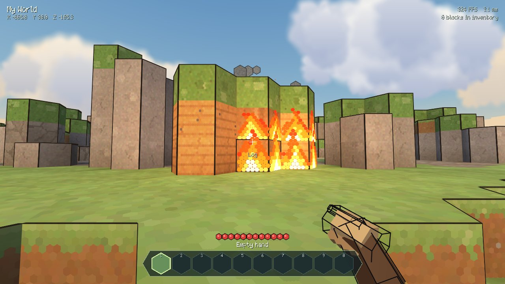
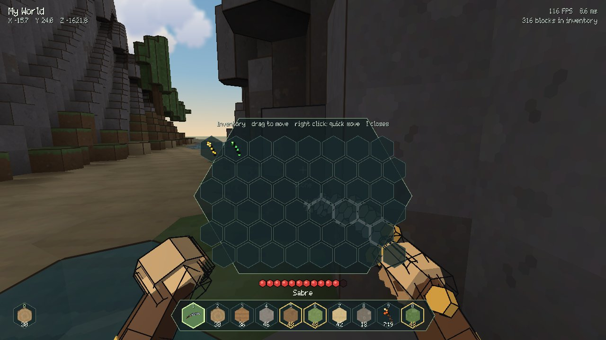
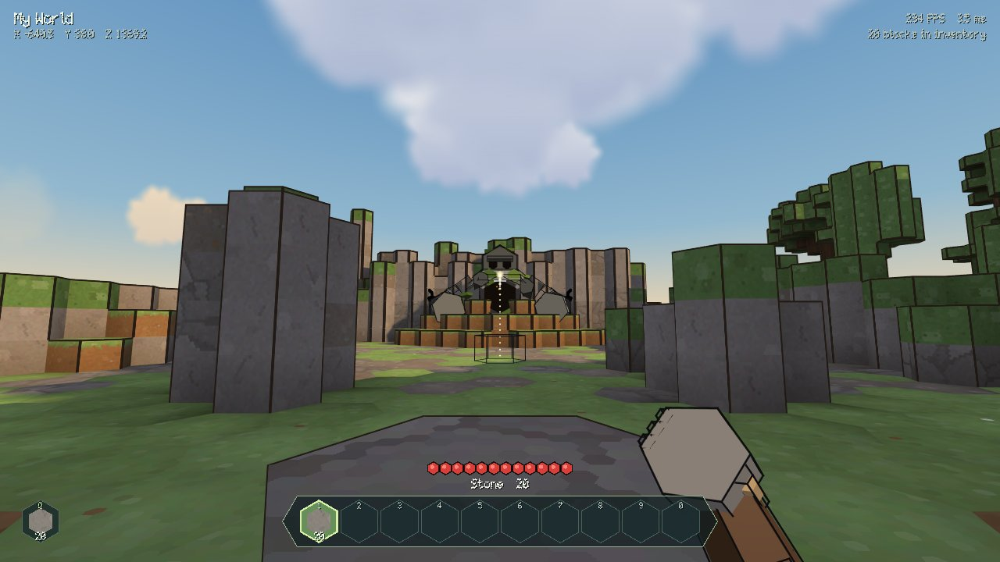

Burgruinen und der Golem
Ein angeketteter Steinriese schläft an der Rückwand. Leise sein! Wach wird er zum Bosskampf: nur der Säbel wirft ihn um, nur der Zauberstab verletzt ihn am Boden.
Ein Hexagon-Voxel-Abenteuer. Inseln aus Sechseck-Säulen, Piratenschiffe, Taucher mit Säbel und Bogen, Höhlen voller Verrotteter, Burgruinen mit einem schlafenden Golem – und ein Ende, das man erreichen kann.
Jayraid Launcher · Windows 10/11
Benötigt die .NET 8 Desktop Runtime. Einmal installiert, holt sich der Launcher jede neue Version selbst – mit einem großen UPDATE-Knopf.
Ein angeketteter Steinriese schläft an der Rückwand. Leise sein! Wach wird er zum Bosskampf: nur der Säbel wirft ihn um, nur der Zauberstab verletzt ihn am Boden.

Holz, Bretter, Laub und Gras fangen Feuer – durch Brandpfeile, Kanonenkugeln oder einen brennenden Spieler. Wasser und Regen löschen.

Taste I klappt 48 Wabenfächer auf; alles lässt sich ziehen, stapeln und tauschen. Neue Welten beginnen leer.

Q halten + Rechtsklick wirft den Block im Bogen. Die Vorschau zeigt den Landeplatz – jeder Wurf ist bei jeder Bildrate gleich.

Das Glockenwesen auf den Piratenschiffen bewacht den Zauberstab. Fällt es, gehen die Händler mit Hexpixel-Fischen auf dich los.
Säbel, Fackel, Zauberstäbe und den Fisch Wabe für Wabe selbst pixeln und direkt ins laufende Spiel übernehmen.
Jayraid-Launcher.zip laden und in einen eigenen Ordner entpacken, z. B. Dokumente\Jayraid.
Jayraid-Launcher.exe öffnen. Fragt Windows nach, auf „Weitere Informationen → Trotzdem ausführen“ klicken.
INSTALLIEREN, dann SPIELEN. Jede Datei wird vorher gegen die unterschriebene Versionsliste geprüft.
Neue Versionen kommen von selbst: Beim Start fragt der Launcher hier nach. Gibt es etwas Neues, wird der große Knopf zu UPDATE – ein Klick, fertig. Auch der Launcher selbst aktualisiert sich so.